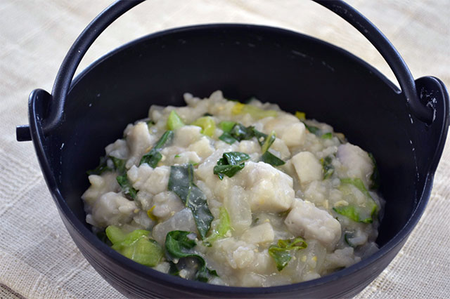

Omiisan

Omiisan, a kind of savory rice porridge, is a traditional winter meal in Tokushima, Japan.
This is the first recipe I learned from my parents.
You can add potatoes, taro, leek, etc.
Ingredients
- Japanese short-grain white rice: 100g
- Miso: 40g
- Instant dashi powder: 1 tsp
- Daikon radish: 1/3
- Carrot: 1/2
- Green onion: to the taste
Steps
- Peel daikon and carrot. Cut into quartered slices.
- Place daikon, carrot, rice and miso in the pot in that order.
Pour water to cover completely. Add instant dashi powder.
- Bring to a boil.
- Reduce heat to low, cover, and simmer until mixture has the consistency of risotto,
about 45 minutes.
- Sprinkle with chopped green onions.